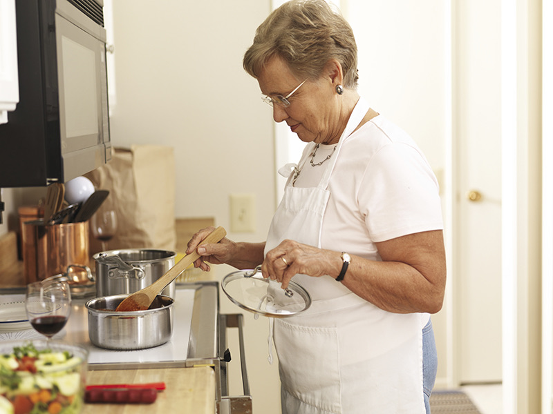
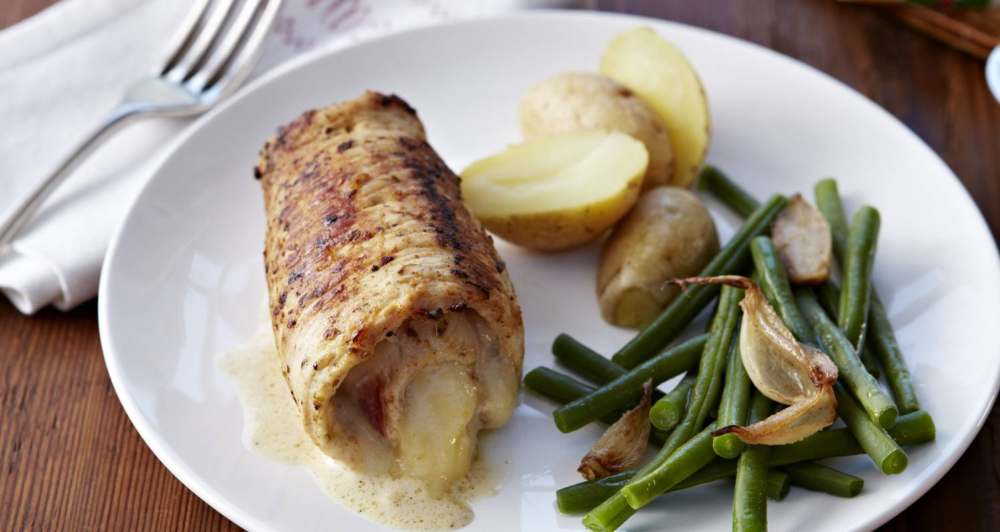
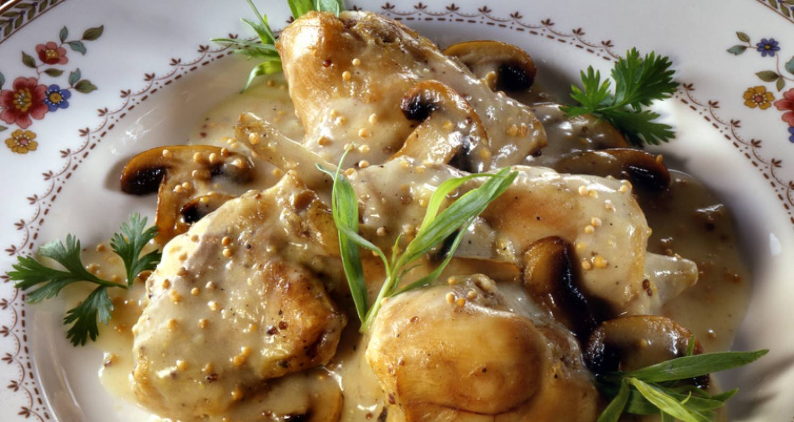

La blanquette de veau à déguster. La mienne est réalisée avec de la poitrine de veau du boucher du coin, les oeufs de la ferme d’à coté, et les carottes de mon jardin !

Le filet de dinde farci au jambon et Vacherin Fribourgeois, produit dans les alpes fribourgeoise. Le plat est accompagné d’haricots sautés à l’ail et de pomme de terre cuite vapeur.

Le lapin du boucher à la moutarde, la recette facile appréciée par tout le monde. N’ayez crainte malgré la moutarde je vous promets une vraie douceur bien crémeuse.